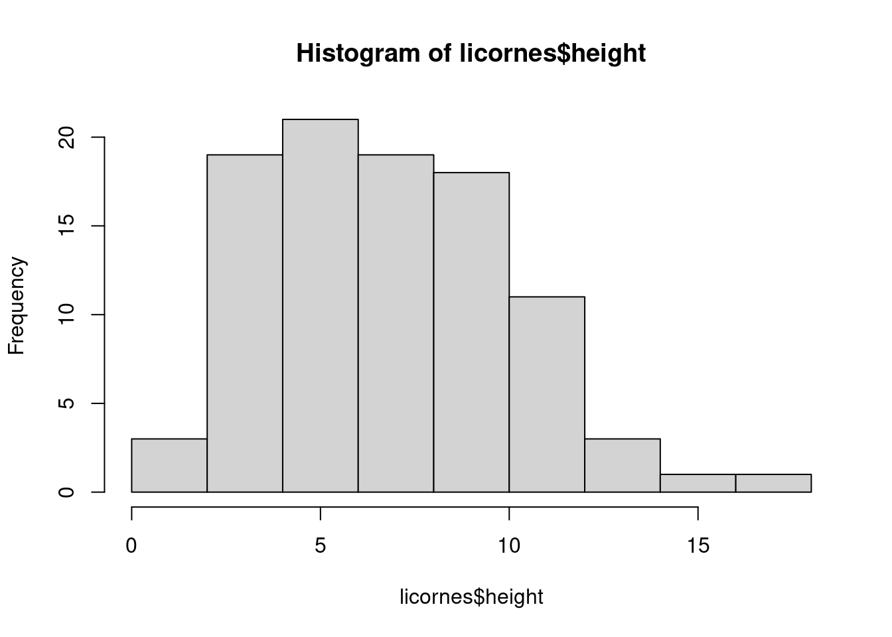
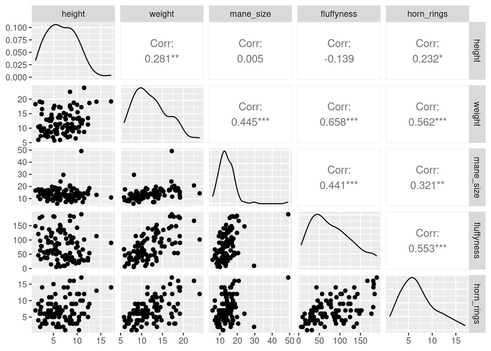
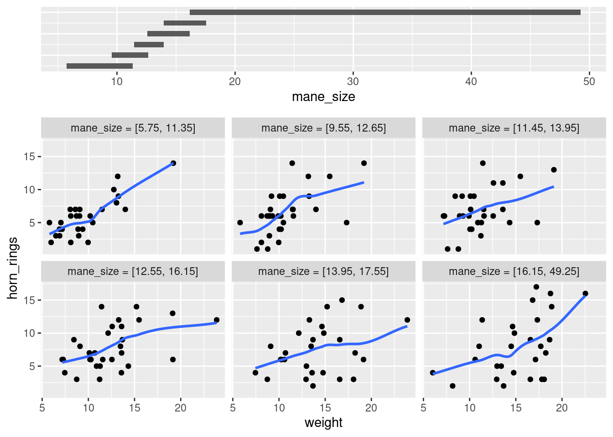
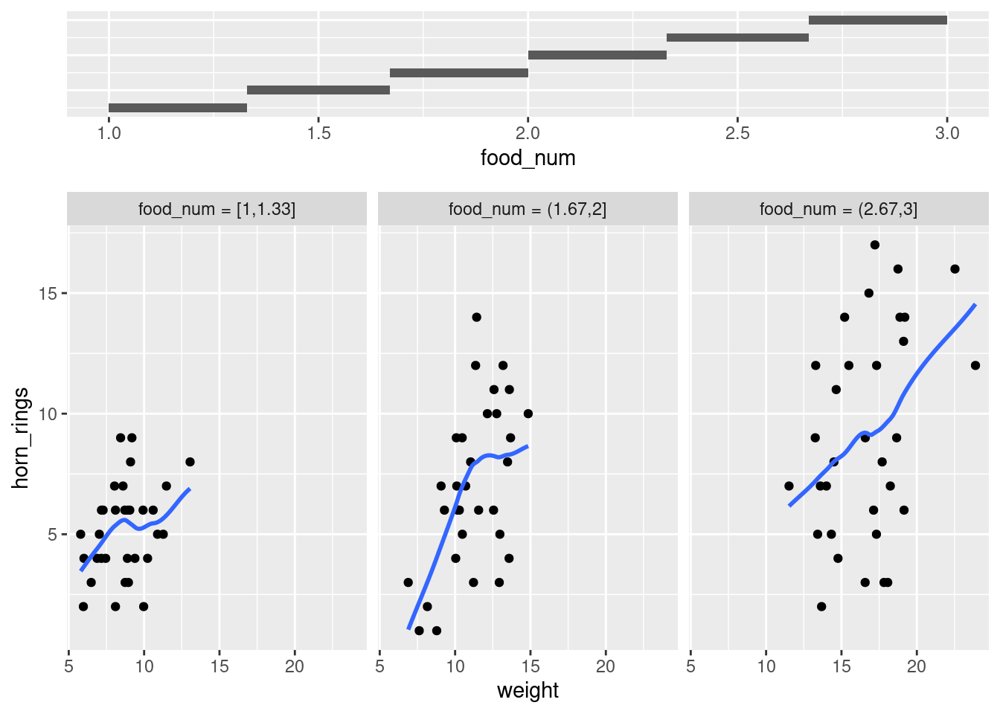

4 Figures
La synthèse de vos données, sous forme numérique ou graphique, est un élément important (bien que souvent négligé) de toute analyse de données. Par chance, R dispose d’excellentes capacités graphiques et peut être utilisé pour produire des graphiques pour l’exploration initiale des données, la validation de modèles ou des figures très complexes destinées à la publication.
Il existe trois systèmes principaux pour produire des graphiques dans R :
Les graphiques de base de R
latticeüì¶ggplot2üì¶
Le système graphique R de base est le système de traçage original qui existe (et qui a évolué) depuis les premiers jours de R. Lors de la création de graphiques avec base R, nous avons tendance à utiliser des fonctions de haut niveau (comme la fonction plot()) pour créer notre graphique, puis utiliser une ou plusieurs fonctions de bas niveau (comme les fonctions lines(), text(), etc.) pour ajouter des informations supplémentaires à ces graphiques.
Cela peut sembler un peu bizarre (et prendre du temps) lorsque vous commencez à créer des graphiques fantaisistes dans R, mais cela vous permet de personnaliser presque tous les aspects de votre graphique et de le complexifier avec des couches successives. Le revers de cette flexibilité est que vous devrez souvent prendre de nombreuses décisions sur la manière dont vous souhaitez que votre graphique se présente plutôt que de compter sur le logiciel pour prendre ces décisions à votre place. Cela dit, il est généralement très rapide et facile de générer des graphiques exploratoires simples à l’aide de graphiques R de base.
Le syst√®me lattice est impl√©ment√© dans le paquet lattice üì¶ qui est pr√© install√© avec l‚Äôinstallation standard de R. Cependant, il n‚Äôest pas charg√© par d√©faut, vous devez donc d‚Äôabord utiliser l‚Äôappeler library(lattice) pour acc√©der √† toutes les fonctions de graphiques. Contrairement aux graphiques de base de R, les graphiques lattices sont g√©n√©ralement g√©n√©r√©s en une seule fois √† l‚Äôaide d‚Äôune seule fonction. Il n‚Äôest donc pas n√©cessaire d‚Äôutiliser des fonctions de tra√ßage de haut et bas niveau pour personnaliser l‚Äôaspect d‚Äôun graphique.
Les graphiques lattices prennent également plus de décisions pour vous en ce qui concerne l’aspect des graphiques, mais cela a un coût, car la personnalisation des graphiques lattices pour qu’ils aient exactement l’aspect que vous souhaitez peut s’avérer plus complexe. Les graphiques lattices se prêtent particulièrement bien au traçage de données multidimensionnelles complexes à l’aide de graphiques en panel (également appelés graphiques en treillis). Nous verrons quelques exemples de ces types de graphiques plus loin dans ce chapitre.
ggplot2 üì¶ est bas√© sur le livre Grammar of Graphics (la grammaire de graphiques) de Wilkinson (2005). (Vous trouverez un r√©sum√© int√©ressant du livre ici).
La Grammaire des graphique décompose les figures en leurs différents éléments (par ex. les statistiques sous-jacentes, l’arrangement géométrique, le thème, voir Figure 4.1).
Les utilisateurs sont ainsi en mesure de manipuler chacun de ces composants (i.e. couches) et de produire une figure sur mesure répondant à leurs besoins spécifiques.

Chacun de ces syst√®mes a ses forces et ses faiblesses et nous les utilisons souvent de mani√®re interchangeable. Dans ce chapitre, nous vous pr√©senterons les graphiques de base de R et les fonction de base deggplot2 üì¶. Il est important de noter que ggplot2 üì¶ n‚Äôest pas obligatoire pour faire des figures ‚Äúfantaisistes‚Äù et informatives dans R. Si vous pr√©f√©rez utiliser les graphiques de base de R, n‚Äôh√©sitez pas √† continuer, car presque tous les graphiques de ggplot2 üì¶ peuvent √™tre cr√©√©es avec les graphiques de base de R (nous utilisons souvent l‚Äôune ou l‚Äôautre approche en fonction de ce que nous faisons). La diff√©rence entre ggplot2 üì¶ et la base R est la fa√ßon dont vous obtenez le produit final plut√¥t que des diff√©rences substantielles dans le produit final lui-m√™me. Il s‚Äôagit n√©anmoins d‚Äôune croyance r√©pandue, probablement due au fait qu‚Äôil est (√† notre avis du moins) plus facile d‚Äôobtenir une silhouette mod√©r√©ment attrayante avec ggplot2 üì¶ car de nombreuses d√©cisions esth√©tiques sont prises pour l‚Äôutilisateur, sans qu‚Äôil sache n√©cessairement qu‚Äôune d√©cision a √©t√© prise !
Dans cet esprit, commençons à créer quelques figures.
4.1 Graphiques de base simples en R
Il existe de nombreuses fonctions dans R pour produire des graphiques, des plus simples aux plus complexes. Il est impossible de couvrir tous les aspects de la production de graphiques en R dans ce livre. Nous vous présenterons donc la plupart des méthodes courantes de représentation graphique des données et nous décrirons comment personnaliser vos graphiques plus tard dans la Section 4.5.
La fonction de haut niveau la plus couramment utilisée pour produire des graphiques en R est (sans surprise) la fonction plot() fonction. Par exemple, représentons le poids (weight) des licornes de notre jeu de données licornes (“unicorns.csv”) que nous avons importé dans la Section 3.3.2.
R a tracé les valeurs de weight (sur l’axe des y) en fonction d’un indice puisque nous ne traçons qu’une seule variable. L’indice est simplement l’ordre des valeurs de weight dans le jeu de données (allant de la valeur 1 à 97). Le nom de variable weight a été automatiquement inclus comme nom de l’axe des y et les échelles des axes ont été automatiquement définies.
Si nous n’avions inclus que la variable weight plutôt que licornes$weight, la fonction plot() affichera une erreur car la variable weight n’existe que dans le jeu de données licornes.
plot(weight)
## Error in plot(weight) : object 'weight' not found (Erreur dans plot(weight) : objet 'weight' non trouvé)Comme de nombreuses fonctions de graphique de base de R n’ont pas d’argument data = pour spécifier directement le nom du jeu de données, nous pouvons utiliser la fonction with() en combinaison avec la fonction plot() comme raccourci.
Pour tracer un nuage de points d’une variable numérique par rapport à une autre variable numérique, il suffit d’inclure les deux variables en tant qu’arguments lors de l’utilisation de la fonction plot(). Par exemple, pour tracer fluffyness sur l’axe des y et weight sur l’axe des x.
plot(x = licornes$weight, y = licornes$fluffyness)
Il existe une approche équivalente pour ces types de graphiques, ce qui est souvent source de confusion au début. Vous pouvez également utiliser la notation de formule lors de l’utilisation de la fonction plot(). Cependant, contrairement à la méthode précédente, la méthode de la formule exige que vous spécifiiez d’abord la variable de l’axe des y, puis un ~ puis la variable de l’axe des x.
plot(fluffyness ~ weight, data = licornes)
Ces deux approches étant équivalentes, nous vous suggérons de choisir celle que vous préférez et de l’appliquer.
Vous pouvez également spécifier le type de graphique que vous souhaitez tracer en utilisant l’argument type =. Vous pouvez tracer seulement les points (type = "p" c’est l’option par défaut), seulement les lignes (type = "l"), les points et les lignes connectés (type = "b"), les points et les lignes avec les lignes passant par les points (type = "o") et les points vides reliés par des lignes (type = "c"). Par exemple, utilisons nos connaissances acquises grâce à la Section 2.4 pour générer deux vecteurs de nombres (mon_x et mon_y), puis traçons l’un par rapport à l’autre en utilisant différents type = pour voir quels types de graphiques on obtient. Ne vous préoccupez pas de la ligne de code par(mfrow = c(2, 2)) pour l’instant. Nous l’utilisons simplement pour diviser fenêtre des graphiques afin de pouvoir placer les quatre graphiques sur la même fenêtre pour gagner de la place. Voir Section 4.4 dans le chapitre pour plus de détails à ce sujet. Le graphique en haut à gauche est de type = "l", le graphe en haut à droite de type = "b" en bas à gauche de type = "o" et en bas à droite est de type = "c".
mon_x <- 1:10
mon_y <- seq(from = 1, to = 20, by = 2)
par(mfrow = c(2, 2))
plot(mon_x, mon_y, type = "l")
plot(mon_x, mon_y, type = "b")
plot(mon_x, mon_y, type = "o")
plot(mon_x, mon_y, type = "c")
plot().Il est vrai que les graphiques que nous avons produites jusqu’à présent n’ont rien d’extraordinaire. Cependant, la fonction plot() est incroyablement polyvalente et peut générer un large éventail de graphiques que vous pouvez personnaliser à votre guise. Nous verrons comment personnaliser les ggplots dans la Section 4.5. Pour l’anecdote, la fonction plot() est également ce que l’on appelle une fonction générique, ce qui signifie qu’elle peut modifier son comportement par défaut en fonction du type d’objet utilisé comme argument. Vous en verrez un exemple dans la Section 9.6 où nous utilisons la fonction plot() pour générer des graphiques de diagnostic des résidus d’un objet de type modèle linéaire (je parie que vous êtes impatient !).
4.2 ggplot2 üì¶
Comme nous l‚Äôavons d√©j√† mentionn√©, la grammaire de ggplot2 üì¶ n√©cessite plusieurs √©l√©ments pour produire un graphique (Figure 4.1) et au moins 3 √©l√©ments sont n√©cessaire :
- un jeu de données (“
data =”) - un système de cartographie définissant x et y (“
aes()”) - une couche géométrique (“
geom_...()”)
Les données et la cartographie sont fournies dans le cadre de l’appel de la fonction ggplot() à l’aide des arguments data et mapping. La couche géométrique est ajoutée à l’aide de fonctions spécifiques.
En fait, toutes les couches sont nécessaires, mais les valeurs simples par défaut des autres couches sont automatiquement fournies.
Pour refaire la Figure 4.2, qui ne contient qu’un nuage de points, nous pouvons utiliser la fonction geom_point().
ggplot(
data = licornes,
mapping = aes(x = weight, y = fluffyness)
) +
geom_point()
ggplot2 üì¶).
Maintenant que nous avons une compr√©hension de base de ggplot() nous pouvons explorer quelques graphiques en utilisant √† la fois le code de base de R et le code ggplot2 üì¶
4.3 Graphiques simples
4.3.1 Diagrammes de dispersion (nuages de points, Scatter plots)
Type de graphique simple très utile pour étudier la relation entre deux variables, par exemple. Voici le code pour le faire en utilisant les fonctions R de base (Figure 4.2)
plot(fluffyness ~ weight, data = licornes)ou ggplot2 üì¶ (Figure 4.3)
ggplot(
data = licornes,
mapping = aes(x = weight, y = fluffyness)
) +
geom_point()Un grand avantage de ggplot() pour les nuages de points simples est la facilité avec laquelle nous pouvons ajouter une régression, une ligne plus lisse (loess ou gam) au graphique en utilisant geom_smooth()pour ajouter une couche statistique au graphique.
ggplot(
data = licornes,
mapping = aes(x = weight, y = fluffyness)
) +
geom_point() +
geom_smooth()4.3.2 Histogrammes
Les histogrammes de fr√©quence sont utiles pour se faire une id√©e de la distribution des valeurs d‚Äôune variable num√©rique. En utilisant la base de R, la fonction hist() prend un tableau num√©rique comme argument principal. Dans ggplot2 üì¶, il faut utiliser geom_histogram(). G√©n√©rons un histogramme des valeurs de taille (height dans le jeu de donn√©es).
Avec la base de R ;
hist(licornes$height)
avec ggplot2 :
ggplot(licornes, aes(x = height)) +
geom_histogram()`stat_bin()` using `bins = 30`. Pick better value with `binwidth`.
ggplot2 üì¶.Les fonctions hist() et geom_histogram() cr√©ent automatiquement les points de rupture (ou ‚Äúbins‚Äù) dans l‚Äôhistogramme, √† moins que vous n‚Äôindiquiez le contraire √† l‚Äôaide de l‚Äôargument breaks = pour sp√©cifier le contraire. Par exemple, disons que nous voulons tracer notre histogramme avec des points de rupture tous les 1 cm de taille des licornes. Nous g√©n√©rons d‚Äôabord une s√©quence allant de z√©ro √† la valeur maximale de height (18 arrondi vers le haut) par pas de 1 √† l‚Äôaide de la fonction seq(). Nous pouvons ensuite utiliser cette s√©quence avec l‚Äôargument breaks =. Tant qu‚Äôon y est, rempla√ßons √©galement le titre moche par quelque chose d‚Äôun peu mieux en utilisant l‚Äôargument main =.
brk <- seq(from = 0, to = 18, by = 1)
hist(licornes$height, breaks = brk, main = "Taille des licornes")
brk <- seq(from = 0, to = 18, by = 1)
ggplot(licornes, aes(x = height)) +
geom_histogram(breaks = brk) +
ggtitle("Taille des licornes")ggplot2 üì¶).Vous pouvez aussi afficher l‚Äôhistogramme sous forme de proportion plut√¥t que de fr√©quence en utilisant l‚Äôargument freq = FALSE dans la fonction hist() ou en indiquant aes(y = after_stat(density)) dans geom_histogram().
Une alternative au tracé d’un simple histogramme est d’ajouter une densité du noyau (“Kernel density”) au graphique. Dans la version de base de R, vous devez d’abord calculer les estimations de la densité du noyau à l’aide de la fonction density() puis ajouter les estimations à un graphique sous forme de ligne à l’aide de la fonction lines().
dens <- density(licornes$height)
hist(licornes$height,
breaks = brk, main = "Taille des licornes",
freq = FALSE
)
lines(dens)
Avec ggplot2 üì¶, vous pouvez simplement ajouter la fonction geom_density() au graphique :
ggplot(licornes, aes(x = height)) +
geom_histogram(aes(y = after_stat(density)), breaks = brk) +
geom_density() +
ggtitle("Taille des licornes")
ggplot2 üì¶).4.3.3 Bo√Ætes √† moustache (Box plots)
D’accord, nous allons le dire franchement, nous adorons les boîtes à moustache et leur relation étroite avec le diagramme en violon. Les “boxplots” (ou “box-and-whisker” plots pour leur nom complet) sont très utiles pour résumer graphiquement la distribution d’une variable, identifier d’éventuelles valeurs inhabituelles et comparer les distributions entre différents groupes. La raison pour laquelle nous les aimons est leur facilité d’interprétation, leur transparence et leur rapport données-encre relativement élevé (c’est-à-dire qu’ils transmettent efficacement une grande quantité d’informations). Nous vous suggérons d’utiliser les “boxplots” autant que possible lorsque vous explorez vos données et de résister à la tentation d’utiliser les diagrammes en bâtons (“barplots”) plus omniprésent (même avec des barres d’erreur standard ou d’intervalles de confiance à 95 %). Le problème des diagrammes en bâtons (ou diagrammes en dynamite) est qu’ils cachent au lecteur des informations importantes telles que la distribution des données et qu’ils supposent que les barres d’erreur (ou les intervalles de confiance) sont symétriques par rapport à la moyenne. Bien sûr, c’est à vous de décider ce que vous faites, mais si vous êtes tenté d’utiliser des diagrammes en bâtons, cherchez “dynamite plots are evil” (les diagrammes de dynamite sont diaboliques) ou voyez ici ou ici pour une discussion plus complète.
Pour créer un “boxplot” dans R, nous utilisons la fonction boxplot(). Par exemple, créons un “boxplot” de la variable weight du jeu de données licornes. Nous pouvons également inclure un nom pour l’axe des y en utilisant l’argument ylab =.
boxplot(licornes$weight, ylab = "Poids (g)")
ggplot(licornes, aes(y = weight)) +
geom_boxplot() +
labs(y = "Poids (g)")La ligne horizontale épaisse au milieu de la boîte est la médiane de la variable weight (environ 11 g). La ligne supérieure de la boîte est le quartile supérieur (75e percentile) et la ligne inférieure est le quartile inférieur (25e percentile). La distance entre les quartiles supérieur et inférieur est appelée l’intervalle interquartile et représente les valeurs de weight pour 50 % des données. Les lignes verticales en pointillés sont appelées moustaches et leur longueur est égale à 1,5 x l’intervalle interquartile. Les points tracés en dehors des moustaches représentent des observations inhabituelles potentielles. Cela ne signifie pas qu’ils sont inhabituels, mais simplement qu’ils méritent un examen plus approfondi. Nous recommandons d’utiliser les “boxplots” en combinaison avec les “dotplots” de Cleveland pour identifier les observations potentiellement inhabituelles (voir la Section 4.3.5 pour plus de détails). Ce qui est intéressant avec les “boxplots”, c’est qu’ils ne fournissent pas seulement une mesure de la tendance centrale (médiane), mais qu’ils vous donnent également une idée de la distribution des données. Si la ligne médiane se trouve plus ou moins au milieu de la boîte (entre les quartiles supérieur et inférieur) et que les moustaches sont plus ou moins de la même longueur, vous pouvez être raisonnablement sûr que la distribution de vos données est symétrique.
Si nous voulons examiner comment la distribution d’une variable change entre différents niveaux d’un facteur, il faut utiliser la notation de formule avec la fonction boxplot(). Par exemple, traçons notre variable weight mais cette fois-ci, voyons comment elle évolue entre chaque niveau de la variable food. Lorsque nous utilisons la notation de formule avec boxplot() nous pouvons utiliser l’argument data = afin d’économiser de la frappe. Nous introduirons également un nom pour l’axe des x à l’aide de l’argument xlab =.
boxplot(weight ~ food,
data = licornes,
ylab = "Poids (g)", xlab = "Niveau de nutrition"
)ggplot(licornes, aes(y = weight, x = food)) +
geom_boxplot() +
labs(y = "Poids (g)", x = "Niveau de nutrition")
ggplot2 üì¶).Les niveaux des facteurs sont repr√©sent√©s dans l‚Äôordre d√©fini par notre variable factorielle food (souvent par ordre alphab√©tique). Pour modifier l‚Äôordre, il faut changer l‚Äôordre des niveaux du facteur food dans le jeu de donn√©es √† l‚Äôaide de la fonction factor() puis redessiner le graphique. Tra√ßons notre bo√Æte √† moustache avec nos niveaux de facteurs allant de low √† high.
licornes$food <- factor(licornes$food,
levels = c("low", "medium", "high"))
ggplot(licornes, aes(y = weight, x = food)) +
geom_boxplot() +
labs(y = "Poids (g)", x = "Niveau de nutrition")ggplot2 üì¶).Nous pouvons √©galement regrouper nos variables selon deux facteurs dans le m√™me graphique. Tra√ßons notre weight mais, cette fois, tra√ßons une bo√Æte s√©par√©e pour chaque niveau food et le traitement des soins parentaux (p_care).
boxplot(weight ~ food * p_care,
data = licornes,
ylab = "Poids (g)", xlab = "Niveau de nutrition"
)
ggplot(licornes, aes(y = weight, x = food)) +
geom_boxplot() +
labs(y = "Poids (g)", x = "Niveau de nutrition") +
facet_grid(.
~ p_care)
ggplot2 üì¶).Ce graphique est beaucoup plus int√©ressant dans ggplot2 üì¶, l‚Äôutilisation de facet_grid() permettant de r√©aliser des graphiques similaires en fonction d‚Äôune troisi√®me (ou m√™me d‚Äôune quatri√®me) variable.
4.3.4 Diagrammes en violon (Violin plots)
Les diagrammes en violon, ou ‚Äúviolin plots‚Äù, sont une combinaison d‚Äôun ‚Äúboxplot‚Äù et d‚Äôun diagramme de densit√© de noyau (vous avez vu un exemple de diagramme de densit√© de noyau dans la section histogramme ci-dessus), le tout en une seule figure. Nous pouvons cr√©er un diagramme en violon dans R √† l‚Äôaide de la fonction vioplot() paquet vioplot üì¶. Vous devrez d‚Äôabord installer ce paquet en utilisant la commade install.packages('vioplot') (comme d‚Äôhabitude). L‚Äôavantage de l‚Äôoption vioplot() est qu‚Äôelle s‚Äôutilise √† peu pr√®s de la m√™me mani√®re que la fonction boxplot(). Nous utiliserons √©galement l‚Äôargument col = "lightblue" pour changer la couleur de remplissage en bleu clair.
library(vioplot)
vioplot(weight ~ food,
data = licornes,
ylab = "Poids (g)", xlab = "Niveau de nutrition",
col = "lightblue"
)Dans le diagramme en violon ci-dessus, nous avons des boîtes familières, comme dans un “boxplot”, pour chaque niveaux de food mais cette fois, la valeur médiane est représentée par un cercle blanc. Autour de chaque boîte figure le diagramme de densité de noyau qui représente la distribution des données pour chaque niveau d’alimentation.
ggplot(licornes, aes(y = weight, x = food)) +
geom_violin() +
geom_boxplot(width = 0.1) +
labs(y = "Poids (g)", x = "Niveau de nutrition")
ggplot2 üì¶).4.3.5 Diagramme en pointill√©s (Dot charts)
Il est extrêmement important d’identifier les observations inhabituelles (appelées “valeurs aberrantes”) dans une variable numérique, car elles peuvent influencer les estimations des paramètres de votre modèle statistique ou indiquer une erreur dans vos données. Un graphique très utile (bien que sous-estimé) pour aider à identifier les valeurs aberrantes est le diagramme en pointillés de Cleveland (“Cleveland’s dotplot”). Vous pouvez produire un diagramme en pointillés en R très simplement en utilisant la fonction dotchart().
dotchart(licornes$height)
Dans le diagramme en pointillés ci-dessus, les données de taille (height) sont représentées le long de l’axe des x et les données sont représentées dans l’ordre dans lequel elles apparaissent dans le jeu de données licornes sur l’axe des y (les valeurs situées en haut de l’axe des y apparaissent plus tard dans le jeu de données et celles situées plus bas apparaissent au début du jeu de données). Sur ce graphique, une seule valeur s’étend vers la droite à environ 17 cm, mais elle ne semble pas particulièrement importante par rapport aux autres. Un exemple de diagramme à points avec une observation inhabituelle est donné ci-dessous :
Nous pouvons également regrouper les valeurs dans notre variable height selon une variable factorielle telle que food en utilisant l’argument groups =. Ceci est utile pour identifier des observations inhabituelles au sein d’un niveau de facteur qui pourraient être masquées lorsque l’on examine toutes les données ensemble.
dotchart(licornes$height, groups = licornes$food)
ggdotchart(data = licornes, x = "height", y = "food")ggpubr üì¶).4.3.6 Diagrammes en paires
Dans ce chapitre, nous avons déjà utilisé la fonction plot() pour créer un nuage de points afin d’explorer la relation entre deux variables numériques. Dans le cas de jeux de données contenant de nombreuses variables numériques, il est souvent utile de créer plusieurs diagrammes de dispersion pour visualiser les relations entre toutes ces variables. Nous pouvons utiliser la fonction plot() pour créer chacun de ces graphiques individuellement, mais il est beaucoup plus facile d’utiliser la fonction pairs(). La fonction pairs() crée un nuage de points multi-panneaux (parfois appelé matrice de nuage de points) qui représente toutes les combinaisons de variables. Créons un nuage de points multi-panneaux de toutes les variables numériques de notre jeu de données licornes. Notez que vous devrez peut-être cliquer sur le bouton “Zoom” dans RStudio pour afficher clairement le graphique.
licornes(avec R de base).# Ou, de manière équivalente, vous pouvez utiliser :
# pairs(licornes[, 4:8])Il faut un peu de temps pour s’habituer à l’interprétation d’un diagramme en paires. Les panneaux sur la diagonale indiquent les noms des variables. La première rangée de graphiques affiche les height sur l’axe des y et les variables weight, mane_size, fluffyness et horn_rings sur l’axe des x pour chacun des quatre graphiques respectivement. La rangée suivante de graphiques comporte weight sur l’axe des y et height, mane_size, fluffyness et horn_rings sur l’axe des x. Nous interprétons les autres lignes de la même manière, la dernière ligne affichant la variable horn_size sur l’axe des y et les autres variables sur l’axe des x. Nous espérons que vous remarquerez que les graphiques situés sous la diagonale sont les mêmes que ceux situés au-dessus de la diagonale, mais avec les axes inversés.
Pour r√©aliser des diagrammes en paires avec ggplot2 üì¶, vous avez besoin de la fonction ggpairs()du paquet GGally üì¶. La sortie est assez similaire mais vous n‚Äôavez que la partie inf√©rieure de la matrice des graphiques, vous obtenez un graphique de densit√© sur la diagonale et les corr√©lations sur la partie sup√©rieure du graphique.
ggpairs(licornes[, c(
"height", "weight", "mane_size",
"fluffyness", "horn_rings"
)])
licornes(avec GGally üì¶).La fonction pairs() peut √™tre modifi√©e pour faire des choses similaires et plus, mais elle est plus complexe. Jetez un coup d‚Äô≈ìil √† l‚Äôexcellent fichier d‚Äôaide de la fonction pairs() (?pairs), qui fournit tous les d√©tails permettant de faire quelque chose comme la figure ci-dessous.

licornes(avec R de base mais en plus classe).4.3.7 Graphique de conditionnement (Coplots)
Lorsque l’on examine la relation entre deux variables numériques, il est souvent utile de pouvoir déterminer si une troisième variable obscurcit ou modifie la relation. Un graphique très pratique à utiliser dans ce genre de situations est le graphique de conditionnement (également connu sous le nom de graphique de dispersion conditionnel, ou encore “coplots”) que nous pouvons créer dans R à l’aide de la fonction coplot(). La fonction coplot() trace les graphiques de deux variables, mais chaque graphique est conditionné (|) par une troisième variable. Cette troisième variable peut être soit numérique, soit factorielle. À titre d’exemple, voyons comment la relation entre le nombre d’anneaux sur la corne (horn_ring ) et le poids (weight) des licornes change en fonction de la taille de la crinière (mane_size). Notez que la fonction coplot() a un argument data = il n’est donc pas nécessaire d’utiliser la notation $.
coplot(horn_rings ~ weight | mane_size, data = licornes)
Pour avoir le m√™me type de graphiques avec ggplot2 üì¶, on peut utiliser la fonction gg_coplot() du paquet ggcleveland üì¶ :
gg_coplot(licornes,
x = weight, y = horn_rings,
faceting = mane_size
)`geom_smooth()` using formula = 'y ~ x'
ggcleveland üì¶).Il faut un peu de pratique pour interpr√©ter les ‚Äúcoplots‚Äù. Le nombre d‚Äôanneaux sur la corne est repr√©sent√© sur l‚Äôaxe des y et le poids des licornes sur l‚Äôaxe des x. Les six graphiques montrent la relation entre ces deux variables pour diff√©rents intervalles de taille de crini√®re Le diagramme en barres en haut indique la plage de valeurs de tailles de crini√®res pour chacun des graphiques. Les graphiques sont lus de en haut √† gauche (en premier) jusqu‚Äô√† en bas √† droite le long de chaque ligne. Par exemple, le graphique en haut √† gauche montre la relation entre le nombre d‚Äôanneaux sur la corne et le poids des licornes dont la crini√®re est la plus courte (environ 5 - 11 cm). Le graphique en bas √† droite montre la relation entre le nombre d‚Äôannaux sur la corne et le poids des licornes dont la crini√®re est comprise entre 16 et 50 cm de long.
Remarquez que la plage de valeurs de la taille de la crinière diffère d’un graphique à l’autre et que les plages se chevauchent d’un graphique à l’autre. La fonction coplot() fait de son mieux pour diviser les données afin de s’assurer qu’il y a un nombre adéquat de points de données dans chaque graphique. Si vous ne souhaitez pas produire des graphiques avec des données qui se chevauchent dans le graphique, vous pouvez définir l’option overlap = (“chevauchement”) à overlap = 0
Vous pouvez également utiliser la fonction coplot() avec des variables de conditionnement factorielles.
Avec gg_coplot() (ggcleveland üì¶) vous devez d‚Äôabord d√©finir le facteur comme num√©rique avant de tracer le graphique et sp√©cifier overlap=0.
Par exemple, nous pouvons examiner la relation entre horn_rings et weight conditionnées par le facteur food. Le graphique en haut à gauche représente la relation entre horn_rings et weight pour les licornes avec un faible (low) niveau de nutrition. Le graphique en bas à droite montre la même relation mais pour les licornes avec un haut (high) niveau de nutrition.
coplot(horn_rings ~ weight | food, data = licornes)
licornes <- mutate(licornes, food_num = as.numeric(food))
gg_coplot(licornes,
x = weight, y = horn_rings,
faceting = food_num, overlap = 0
)`geom_smooth()` using formula = 'y ~ x'
ggcleveland üì¶).4.3.8 R√©sum√© de la fonction du graphique
| Type de graphique | ggplot2 | Fonction de base de R |
|---|---|---|
| nuage de points | geom_point() |
plot() |
| histogramme de fréquence | geom_histogram() |
hist() |
| boîte à moustache | geom_boxplot() |
boxplot() |
| dotplots de Cleveland | ggdotchart() |
dotchart() |
| diagrammes en paires | ggpairs() |
pairs() |
| graphique de conditionnement | gg_coplot() |
coplot() |
Nous esp√©rons que vous avez compris qu‚Äôil est possible de cr√©er facilement des graphiques exploratoires tr√®s instructifs √† l‚Äôaide des graphiques de base de R ou de ggplot2 üì¶. Le choix de l‚Äôun ou l‚Äôautre est enti√®rement libre (c‚Äôest ce qui fait l‚Äôint√©r√™t de R, vous pouvez choisir) et nous m√©langeons volontiers les deux pour r√©pondre √† nos besoins. Dans la section suivante, nous verrons comment personnaliser des graphiques de base de R pour leur donner l‚Äôaspect que vous souhaitez.
4.4 Graphiques multiples
4.4.1 R de base
Dans la base de R, l’une des méthodes les plus courantes pour tracer plusieurs graphiques consiste à utiliser la fonction graphique principale par() pour diviser la fenêtre de graphiques en un certain nombre de sections définies avec l’argument mfrow =. Avec cette méthode, il faut d’abord spécifier le nombre de lignes, puis de colonnes de graphiques que vous souhaitez, puis exécuter le code pour chaque graphique. Par exemple, pour tracer deux graphiques côte à côte, nous utiliserions par(mfrow = c(1, 2)) pour diviser la fenêtre en une ligne et deux colonnes.
par(mfrow = c(1, 2))
plot(licornes$weight, licornes$fluffyness,
xlab = "Poids",
ylab = "Niveau de douceur",
main = "a)")
boxplot(fluffyness ~ food, data = licornes, cex.axis = 0.6,
xlab = "Niveau de nutrition",
ylab = "Niveau de douceur",
main = "b)")
Une fois que vous avez terminé vos graphiques, n’oubliez pas de réinitialiser votre fenêtre graphique à la normale avec par(mfrow = c(1,1)).
4.4.2 ggplot2 üì¶
En plus des fonctions facet_grid() et facet_wrap() qui permettent de r√©p√©ter et d‚Äôorganiser facilement plusieurs graphiques en fonction de variables sp√©cifiques, il y a beaucoup de mani√®re d‚Äôorganiser plusieurs graphiques ggplots2 üì¶ ensemble. L‚Äôapproche que nous recommandons est d‚Äôutiliser le paquet patchwork üì¶.
Vous devrez d’abord l’installer (si vous ne l’avez pas encore) et l’appeler (library(patchwork)).
install.packages("patchwork")
library(patchwork)Une note importante : pour ceux qui ont utilis√© la base R pour produire leurs figures et qui sont familiers avec l‚Äôutilisation de par(mfrow = c(2,2)) (qui permet de tracer quatre figures sur deux lignes et deux colonnes), sachez que cela ne fonctionne pas avec les objets de ggplot2 üì¶. Vous devrez utiliser soit le paquet patchwork üì¶ ou d‚Äôautres paquets tels que gridArrange üì¶ ou cowplot üì¶ ou convertir le ggplot en objets grobs.
Pour tracer les deux graphiques ensemble, il faut assigner chaque figure √† un objet distinct, puis utiliser ces objets lorsque l‚Äôon utilise patchwork üì¶.
Nous pouvons donc générer 2 figures et les assigner à des objets. Comme vous pouvez le constater, les figures n’apparaissent pas dans la fenêtre graphique. Elles n’apparaîtront que lorsque vous appellerez l’objet.
premiere_figure <- ggplot(
aes(x = height, y = fluffyness, color = food),
data = licornes) +
geom_point() +
geom_smooth(method = "lm", se = FALSE) +
facet_grid(block ~ p_care)
deuxieme_figure <- ggplot(
aes(x = weight, y = fluffyness, color = food),
data = licornes) +
geom_point() +
geom_smooth(method = "lm", se = FALSE) +
facet_grid(block ~ p_care)Deux options simples et imm√©diates s‚Äôoffrent √† nous avec patchwork üì¶ : disposer les figures les unes sur les autres (sp√©cifi√©es avec un /) ou arranger les figures c√¥te √† c√¥te (sp√©cifi√© soit avec un + ou un |). Essayons de tracer les deux figures, l‚Äôune au-dessus de l‚Äôautre.
premiere_figure / deuxieme_figurepatchwork üì¶.Jouons un peu: Essayez de cr√©er une version juxtapos√©e de la figure ci-dessus (indice : essayez les autres op√©rateurs).
Nous pouvons aller plus loin et assigner des figures imbriqu√©es patchwork üì¶ √† un objet et l‚Äôutiliser √† son tour pour cr√©er des √©tiquettes pour les figures individuelles.
figure_imbriquees <- premiere_figure / deuxieme_figure
figure_imbriquees +
plot_annotation(tag_levels = "A", tag_suffix = ")")patchowrk üì¶.4.5 Personnalisation de ggplots
Partir se balader pour √™tre √©dit√© ü¶Ñ
4.6 Exportation des parcelles
Créer des graphiques dans R, c’est bien, mais que faire si vous souhaitez utiliser ces graphiques dans votre thèse, votre rapport ou votre publication ? Une option consiste à cliquer sur le bouton “Exporter” dans l’onglet “Graphiques” de RStudio. Vous pouvez également exporter vos graphiques de R vers un fichier externe en écrivant du code dans votre script R (option privilégiée). L’avantage de cette approche est que vous avez un peu plus de contrôle sur le format de sortie et qu’elle vous permet également de générer (ou de mettre à jour) des graphiques automatiquement chaque fois que vous exécutez votre script. Vous pouvez exporter vos figures dans de nombreux formats différents, mais les plus courants sont pdf, png, jpeg et tiff.
Par défaut, R (et donc RStudio) dirige tous les graphiques que vous créez vers la fenêtre de graphiques. Pour enregistrer votre graphique dans un fichier externe, vous devez d’abord rediriger votre graphique vers un périphérique graphique différent. Pour ce faire, vous pouvez utiliser l’une des nombreuses fonctions de périphérique graphique pour démarrer une nouvelle fenêtre graphique. Par exemple, pour enregistrer un graphique au format pdf, nous utiliserons la fonction pdf(). Le premier argument de la fonction pdf() est le chemin d’accès et le nom du fichier que nous voulons créer (n’oubliez pas d’inclure l’extension .pdf). Une fois que nous avons utilisé la fonction pdf() nous pouvons alors écrire tout le code que nous avons utilisé pour créer notre graphique, y compris les paramètres graphiques tels que le réglage des marges et la division de la fenêtre graphique. Une fois le code exécuté, il faut fermer le dispositif de graphique pdf à l’aide de la fonction dev.off().
pdf(file = "output/my_plot.pdf")
par(mar = c(4.1, 4.4, 4.1, 1.9), xaxs = "i", yaxs = "i")
plot(licornes$weight, licornes$fluffyness,
xlab = "weight (g)",
ylab = expression(paste("shoot area (cm"^"2", ")")),
xlim = c(0, 30), ylim = c(0, 200), bty = "l",
las = 1, cex.axis = 0.8, tcl = -0.2,
pch = 16, col = "dodgerblue1", cex = 0.9
)
text(x = 28, y = 190, label = "A", cex = 2)
dev.off()Si nous voulons sauvegarder ce graphique au format png, il nous suffit d’utiliser la fonction png(), plus ou moins de la même manière.
png("output/my_plot.png")
par(mar = c(4.1, 4.4, 4.1, 1.9), xaxs = "i", yaxs = "i")
plot(licornes$weight, licornes$fluffyness,
xlab = "weight (g)",
ylab = expression(paste("shoot area (cm"^"2", ")")),
xlim = c(0, 30), ylim = c(0, 200), bty = "l",
las = 1, cex.axis = 0.8, tcl = -0.2,
pch = 16, col = "dodgerblue1", cex = 0.9
)
text(x = 28, y = 190, label = "A", cex = 2)
dev.off()D’autres fonctions utiles sont : jpeg(), tiff() et bmp(). Des arguments supplémentaires dans ces fonctions vous permettent de modifier la taille, la résolution et la couleur d’arrière-plan de vos images enregistrées. Voir aussi ?png pour plus de détails.
ggplot2 üì¶ fournir une fonction tr√®s utile : ggsave(), qui simplifie grandement la sauvegarde des graphiques, mais ne fonctionne que pour les ggplots.
Après avoir produit un graphique et l’avoir vu dans votre IDE, vous pouvez simplement exécuter ggsave() avec l’argument adéquat pour sauvegarder le dernier ggplot produit. Vous pouvez aussi, bien sûr, spécifier quel tracé doit être sauvegardé.
ggsave("file.png")